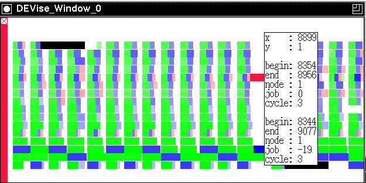

Program Traces Example

Input Data
The input data:
- are gathered from program traces from a materials science application.
The application is distributed across multiple workstations.
- contain attributes: workstation number, job number, and starting and
ending time for each job.
The input file looks like:
5 51 179 27 1
1 8 191 31 1
7 82 236 25 1
...
Problem
We are trying to debug the program, and compare the performance of
different distributed algorithms.
Visualization
click here to see our model of creating visualizations.
The visualization is created as follows:
- Map each record, representing one computation, to a rectangle:
workstation number on the Y axis, and time on the X axis. The length of
the rectangle represents the length of each computation. Map
job number to color.
- Use the mouse button to fetch the actual records under the mouse pointer.
The records are displayed textually in a pop-up window.
Observations
- This example is used to illustrate the mapping flexibility of DEVise.
- Calculations occur in cycles.
- Black rectangles are represented by aborted jobs: jobs
that have to be abandoned because a workstation is reclaimed by its user.
Back to DEVise home page.